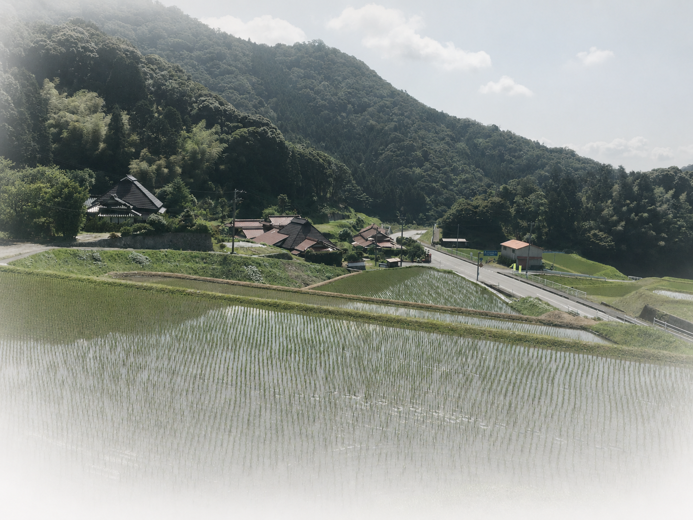

YOUR CONCERNS
お悩みから探す
売却、遠方からの管理、相続。今困っていることから、山林・里山の現状と選択肢を整理します。
THREE STARTING POINTS
今の悩みから、
整理を始められます。
OUR SERVICES
必要な支援へ、
相談をつなぐ。
山林所有者の相続・管理・出口整理と、森林組合・林業事業体の計画づくり。それぞれの状況に合わせたサービスをご案内します。
サービスを見る →CONTACT
山のことが分からなくても、
まずはご相談ください。
初回インタビューで、今分かっていることと、次に確認したいことを一緒に整理します。
ウェブで問い合わせる →